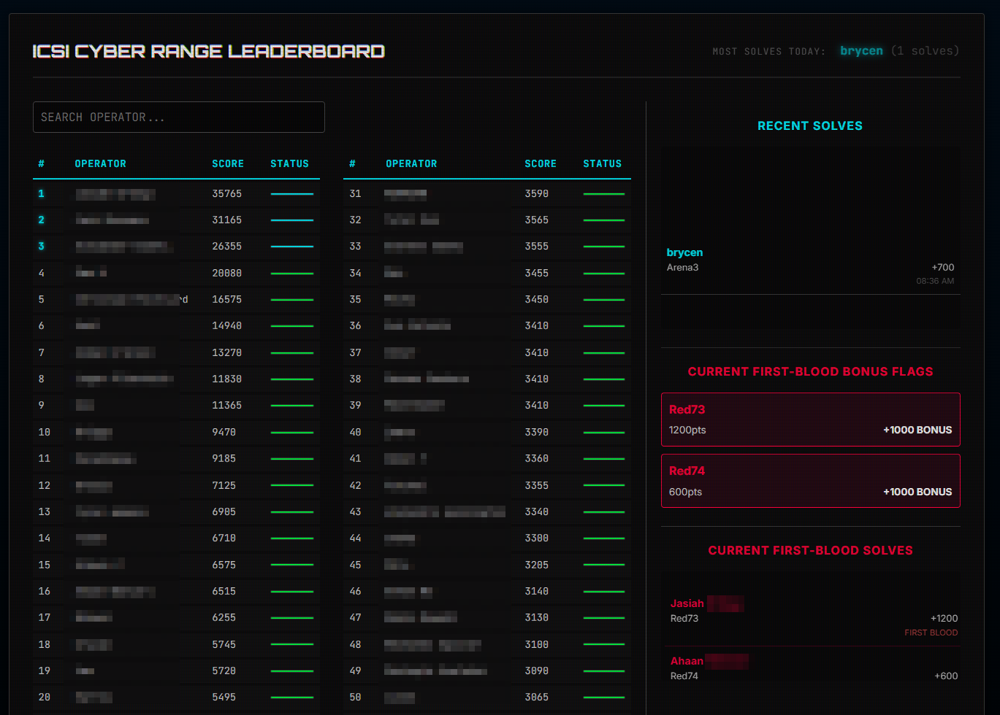
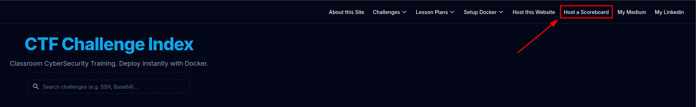

iCSI Cyber Range

- Gamification drives student engagement — leaderboard visible to the entire class.
- First Blood bonuses reward students who solve challenges first, creating genuine investment in the competition.
- Students track their rank across the semester; performance exports directly to the gradebook.
- Auto-graded on flag submission — no manual grading needed.

Anyone can host their own range — just type the docker run command